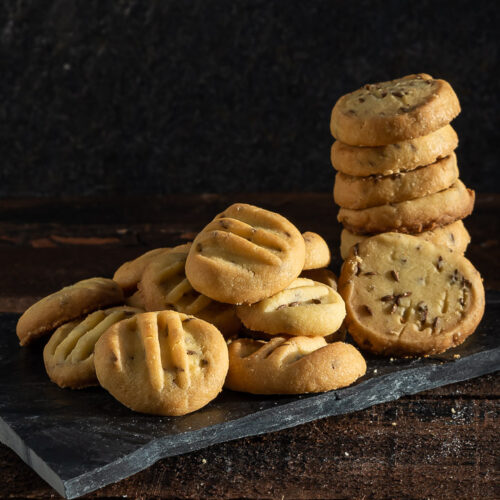

Ingredients

- 3 parts Bisquick Powder (not less sodium)
- 1 part maida (all-purpose flour)
- 1 part oil
- 1 part milk
- 1/2 tsp baking powder
- Jeera (cumin seeds)
Instructions
- Mix everything well.
- Preheat oven to 225 degrees.
- Bake for 1 hour.
- Then decrease heat to 175 degrees and heat for 1 more hour or till they are hard and done.